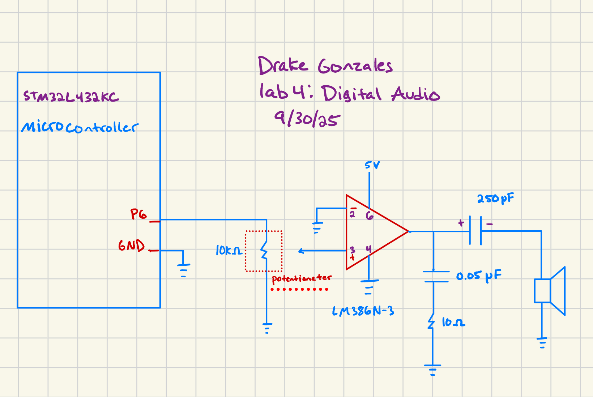
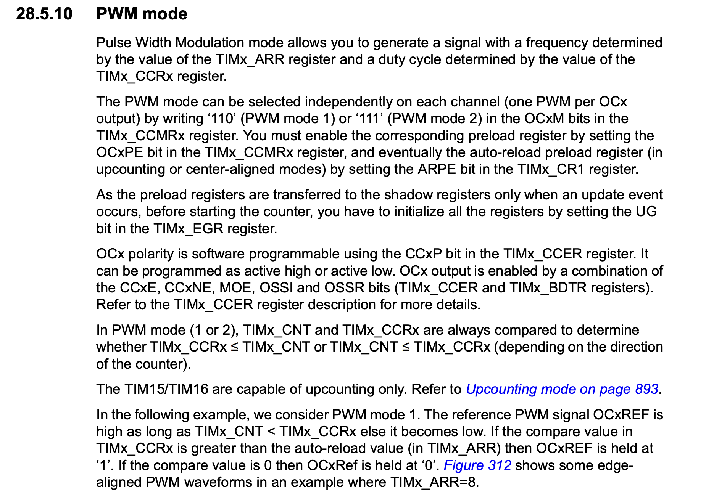

Lab 4 Digital Audio
Introduction
In this lab, a design was made to use a microcontroller, its respective timers, clk and GPIO pins, to play music. Two timers were incorporated into this design. TIM16 was used as a PWM source to create an output square wave, and TIM7 was used as a delay timer. The clk used for the TIM16 design was the PLL, which was initialized by the MSI (4MHZ). For TIM7, the MSI(4Hz) clk was used in a direct connection.
The design was developed using C on SEGGER, and implemented on an STM32L432KC Microcontroller.
Technical Documentation
The source code for this lab can be found in this GitHub repo.
The documentation for the STM32L432KC manual Github link.
Equations
To be able to control the timer’s correctly, the design implemented sets internal prescalars which slows down the clock to be able to control the output minimum and maximum, frequency and duration.
To perform this function, the design must first set the correct internal oscillator on, in this case it was the MSI clk. This clock oscillates at 4 MHz.
To step down this clk for the wide range of frequency’s (0 to ~1500 Hz) and duration (0 to 500 ms) for this lab a correct prescalar must be set for each timer.
#### TIM7 - delay timer
For timer7 (a basic timer), a prescaler of 39 was chosen to stepdown the MSI clk to 100 kHz. To calculate the minimum duration we take the clock rate that we dropped to 100kHz, and invert it to find the time. 1/100Khz = 10 µs per count. We then use the equation 100*ms - 1; to determine our ARR value.
Minimum delay - The input frequency must be above 1 to prevent the underflow of bits. (100 * (0)-1) = -1. Maximum delay - The input frequency must be below the max value from our ARR * 100, which is m <= 655.36ms.
TIM16 - PWM timer
For timer16 (a General-Purpose timer), a prescalar value of 3 was chosen to stepdown the PLL input clock to 1Mhz. Maximum freq - 1Mhz, which is out input frequency, although this value will unlikely sound. Minimum freq - Fmin = 1,000,000/ 65536 (the highest ARR) = 15.258789 Hz
That being said, we can test if we are getting the correct frequency/ delay, by plugging them into the aforementioned equations.
If we do a ms of 1. ARR = 100ms-1 = 99. (100 ticks 10 µs = 1ms)
For frequency we can test 20hz with (freqclk / ((TIM16 -> PSC +1) * freq)) - 1. ((1,000,000 / 4)*20) -1 = 49,999. Which is 1 µs tick per 50 ms period. f = 1/T -> 1/0.05 s = 20Hz.
Wiring Schematic

Above pictures the electrical circuit for our design. It portrays resistors, and all other electrical components used for the design.
Results and Discussion
To find each step to configure each timer and its respective registers, the STM32L432 reference manual was used.
The steps taken for this lab were:
Create pointers for each register inside each timer Initialize TIM16 and configure the PWM mode Link TIM6 to the MSI, and create a counter-up delay Combine these functions and run them inside the main file.
An example of one of these steps from the datasheet can be seen below.

Above is sections 28.510 of the reference manual. It describes how to set up the TIM15 and TIM16 PWM mode by showing what registers to enable or what bits to put in different registers.
The design uploaded to the STM32 was a success. It sucessfully produced Fur Elise, and another composition of my choice, which was te first few initial chrods of Thunderstruck by AC/DC.
Conclusion
The design was a success. Each note was played at the correct frequency (measured by the oscilliscope), and correctly delayed each PWM signal by the amount specified. Each notes volume was also controlled by a potentiometer. A seperate composition was created and worked as intended as well. This lab taught the importance of datasheets, registers, bit-wise functions, and header files. That being said it also taught the importance of knowing which CMSIS folders to use when using a new microcontroller.
This Lab took 15 hours.
Suggestions
To, in future labs, better understand the differences in each clock, and understand what the benefits of using each other are. I also want to better understand the specific hardware that drives these clocks.
Ai prototype
Here is the AI prototype for this lab. Posted below is the prompt that was plugged into Claude AI:
What timers should I use on the STM32L432KC to generate frequencies ranging from 220Hz to 1kHz? What’s the best choice of timer if I want to easily connect it to a GPIO pin? What formulae are relevant, and what registers need to be set to configure them properly?
The output (part):
Why TIM2 is Optimal TIM2 is a 32-bit general-purpose timer that offers several advantages:
PWM output capability - can directly drive GPIO pins 32-bit resolution - provides fine frequency control Multiple output channels - TIM2_CH1 through TIM2_CH4 Easy GPIO connection - dedicated timer output pins
Basic Configuration Sequence
Enable timer clock in RCC_APB1ENR1 Configure GPIO for alternate function (AF1 for TIM2) Set prescaler and auto-reload values Configure PWM mode in CCMRx register Enable channel output in CCER register Set duty cycle in CCRx register Start timer by setting CEN bit
The Ai wanted me to use the TIM2 timer which is a good timer to use for the PWM output. It then gave me steps on how to set it up using the correct registers from the manul. The output from the model did not change when I also uploaded the reference manual for reference. However, the output did get more specific and gave me more direct code for the design:
// Enable GPIOA clock RCC->AHB2ENR |= RCC_AHB2ENR_GPIOAEN;
// Configure PA0 as alternate function (TIM2_CH1) GPIOA->MODER &= ~(0x3 << 0); GPIOA->MODER |= (0x2 << 0); // Alternate function mode
// Set alternate function 1 for TIM2 GPIOA->AFR[0] &= ~(0xF << 0); GPIOA->AFR[0] |= (0x1 << 0); // AF1 for TIM2
Overall this LLM was super fast (took about 5s to respond), andd it gave an accurate answer when it comes to specific registers and bit-wise functions. The LLM also generated code for the GPIO pins, which was very similar to the GPIO header file that was provided this lab. TIM 15 and 16 are the timers that I used due to them being more versatile in future designs. Overall, I belive the LLM did excellent in C and microcontroller design.